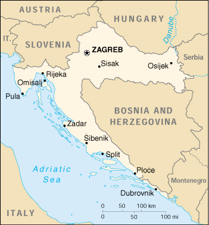

![[Country Flag of Croatia]](../flags/hr-lgflag.jpg)
| Croatia |
|
         |  | |
| Introduction |
Background: In 1918, the Croats, Serbs, and Slovenes formed a kingdom known after 1929 as Yugoslavia. Following World War II, Yugoslavia became an independent communist state under the strong hand of Marshal TITO. Although Croatia declared its independence from Yugoslavia in 1991, it took four years of sporadic, but often bitter, fighting before occupying Serb armies were mostly cleared from Croatian lands. Under UN supervision the last Serb-held enclave in eastern Slavonia was returned to Croatia in 1998.
| Geography |
Location: Southeastern Europe, bordering the Adriatic Sea, between Bosnia and Herzegovina and Slovenia
Geographic coordinates: 45 10 N, 15 30 E
Map references: Europe
Area:
total:
56,538 sq km
land:
56,410 sq km
water:
128 sq km
Area - comparative: slightly smaller than West Virginia
Land boundaries:
total:
2,197 km
border countries:
Bosnia and Herzegovina 932 km, Hungary 329 km, Serbia and Montenegro 266 km (241 km with Serbia; 25 km with Montenegro), Slovenia 670 km
Coastline: 5,790 km (mainland 1,778 km, islands 4,012 km)
Maritime claims:
continental shelf:
200-m depth or to the depth of exploitation
territorial sea:
12 nm
Climate: Mediterranean and continental; continental climate predominant with hot summers and cold winters; mild winters, dry summers along coast
Terrain: geographically diverse; flat plains along Hungarian border, low mountains and highlands near Adriatic coastline and islands
Elevation extremes:
lowest point:
Adriatic Sea 0 m
highest point:
Dinara 1,830 m
Natural resources: oil, some coal, bauxite, low-grade iron ore, calcium, natural asphalt, silica, mica, clays, salt, hydropower
Land use:
arable land:
21%
permanent crops:
2%
permanent pastures:
20%
forests and woodland:
38%
other:
19% (1993 est.)
Irrigated land: 30 sq km (1993 est.)
Natural hazards: frequent and destructive earthquakes
Environment - current issues: air pollution (from metallurgical plants) and resulting acid rain is damaging the forests; coastal pollution from industrial and domestic waste; widespread casualties and destruction of infrastructure in border areas affected by civil strife
Environment - international agreements:
party to:
Air Pollution, Air Pollution-Sulphur 94, Biodiversity, Climate Change, Hazardous Wastes, Law of the Sea, Marine Dumping, Nuclear Test Ban, Ozone Layer Protection, Ship Pollution, Wetlands
signed, but not ratified:
Air Pollution-Persistent Organic Pollutants, Climate Change-Kyoto Protocol, Desertification
Geography - note: controls most land routes from Western Europe to Aegean Sea and Turkish Straits
| People |
Population: 4,282,216 (July 2000 est.)
Age structure:
0-14 years:
18% (male 396,484; female 376,267)
15-64 years:
67% (male 1,445,101; female 1,420,159)
65 years and over:
15% (male 238,853; female 405,352) (2000 est.)
Population growth rate: 0.93% (2000 est.)
Birth rate: 12.82 births/1,000 population (2000 est.)
Death rate: 11.51 deaths/1,000 population (2000 est.)
Net migration rate: 7.98 migrant(s)/1,000 population (2000 est.)
Sex ratio:
at birth:
1.07 male(s)/female
under 15 years:
1.05 male(s)/female
15-64 years:
1.02 male(s)/female
65 years and over:
0.59 male(s)/female
total population:
0.94 male(s)/female (2000 est.)
Infant mortality rate: 7.35 deaths/1,000 live births (2000 est.)
Life expectancy at birth:
total population:
73.67 years
male:
70.04 years
female:
77.51 years (2000 est.)
Total fertility rate: 1.94 children born/woman (2000 est.)
Nationality:
noun:
Croat(s)
adjective:
Croatian
Ethnic groups: Croat 78.1%, Serb 12.2%, Muslim 0.9%, Hungarian 0.5%, Slovenian 0.5%, Czech 0.4%, Albanian 0.3%, Montenegrin 0.3%, Roma 0.2%, others 6.6% (1991)
Religions: Roman Catholic 76.5%, Orthodox 11.1%, Muslim 1.2%, Protestant 0.4%, others and unknown 10.8% (1991)
Languages: Croatian 96%, other 4% (including Italian, Hungarian, Czech, Slovak, and German)
Literacy:
definition:
age 15 and over can read and write
total population:
97%
male:
99%
female:
95% (1991 est.)
| Government |
Country name:
conventional long form:
Republic of Croatia
conventional short form:
Croatia
local long form:
Republika Hrvatska
local short form:
Hrvatska
Data code: HR
Government type: presidential/parliamentary democracy
Capital: Zagreb
Administrative divisions: 20 counties (zupanije, zupanija - singular), 1 city (grad -singular)*: Bjelovarsko-Bilogorska Zupanija, Brodsko-Posavska Zupanija, Dubrovacko-Neretvanska Zupanija, Istarska Zupanija, Karlovacka Zupanija, Koprivnicko-Krizevacka Zupanija, Krapinsko-Zagorska Zupanija, Licko-Senjska Zupanija, Medimurska Zupanija, Osjecko-Baranjska Zupanija, Pozesko-Slavonska Zupanija, Primorsko-Goranska Zupanija, Sibensko-Kninska Zupanija, Sisacko-Moslavacka Zupanija, Splitsko-Dalmatinska Zupanija, Varazdinska Zupanija, Viroviticko-Podravska Zupanija, Vukovarsko-Srijemska Zupanija, Zadarska Zupanija, Zagreb*, Zagrebacka Zupanija
Independence: 25 June 1991 (from Yugoslavia)
National holiday: Statehood Day, 30 May (1990)
Constitution: adopted on 22 December 1990
Legal system: based on civil law system
Suffrage: 18 years of age; universal (16 years of age, if employed)
Executive branch:
chief of state:
President Stjepan (Stipe) MESIC (since 18 February 2000)
head of government:
Prime Minister Ivica RACAN (since 27 January 2000); Deputy Prime Ministers Goran GRANIC (since NA February 2000), Zeljka ANTUNOVIC (since NA February 2000), Slavko LINIC (since NA February 2000)
cabinet:
Council of Ministers named by the prime minister and approved by the president and the House of Representatives
elections:
president elected by popular vote for a five-year term; election last held 7 February 2000 (next to be held NA 2005); prime minister appointed by the president
election results:
Stjepan MESIC elected president; percent of vote - Stjepan MESIC (HNS) 56%, Drazen BUDISA (HSLS) 44%
note:
government coalition - SDP, HSLS, HSS, LP, HNS, IDS
Legislative branch:
bicameral Assembly or Sabor consists of the House of Counties or Zupanijski Dom (68 seats - 63 directly elected by popular vote, 5 appointed by the president; members serve four-year terms) and House of Representatives or the Zastupnicki Dom (151 seats, members elected by popular vote to serve four-year terms)
elections:
House of Counties - last held 13 April 1997 (next to be held NA 2001); House of Representatives - last held 2-3 January 2000 (next to be held NA 2004)
election results:
House of Counties - percent of vote by party - NA; seats by party - HDZ 42, HDZ/HSS 11, HSS 2, IDS 2, SDP/PGS/HNS 2, SDP/HNS 2, HSLS/HSS/HNS 1, HSLS 1; note - in some districts certain parties ran as coalitions, while in others they ran alone; House of Representatives - percent of vote by party - NA; seats by party - HDZ 46, SDP 44, HSLS 24, HSS 17, HSP/HKDU 5, IDS 4, HNS 2, independents 4, others 5
Judicial branch: Supreme Court, judges appointed for eight-year terms by the Judicial Council of the Republic, which is elected by the House of Representatives; Constitutional Court, judges appointed for eight-year terms by the Judicial Council of the Republic, which is elected by the House of Representatives
Political parties and leaders:
Action of the Social Democrats of Croatia or ASH [Silvije DEGEN]; Alliance of Croatian Coast and Mountains Department or PGS [Luciano SUSANJ]; Croatian Christian Democratic Union or HKDU [Marko VESELICA, president]; Croatian Democratic Independents or HND [Josip MANOLIC, president]; Croatian Democratic Union or HDZ [Vladimir SEKS, acting president]; Croatian Party of Rights or HSP [Anto DJAPIC]; Croatian Party of Rights 1861 or HSP 1861 [Dobrislav PARAGA]; Croatian Peasant Party or HSS [Zlatko TOMCIC]; Croatian People's Party or HNS [Radimir CACIC, president]; Croatian Social Liberal Party or HSLS [Drazen BUDISA, president]; Independent Democratic Serb Party or SDSS [Vojislav STANIMIROVIC]; Istrian Democratic Assembly or IDS [Ivan JAKOVCIC]; Liberal Party or LP [Vlado GOTOVAC, president]; Party of Democratic Action or SDA [Semso TANKOVIC]; Primorje Gorski Kotar Alliance [leader NA]; Serbian National Party or SNS [Milan DJUKIC]; Slanvonsko-Baranja Croatian Party or SBHS [Damir JURIC]; Social Democratic Party of Croatia or SDP [Ivica RACAN]
note:
the Social Democratic Party or SDP and the Croatian Social Liberal Party or HSLS formed a coalition as did the HSS, HNS, LP, and IDS, which together defeated the Croatian Democratic Union or HDZ in the 2000 lower house parliamentary election
Political pressure groups and leaders: NA
International organization participation: BIS, CCC, CE, CEI, EBRD, ECE, FAO, IADB, IAEA, IBRD, ICAO, ICFTU, ICRM, IDA, IFAD, IFC, IFRCS, IHO, ILO, IMF, IMO, Inmarsat, Intelsat, Interpol, IOC, IOM, ISO, ITU, NAM (observer), OAS (observer), OPCW, OSCE, UN, UNCTAD, UNESCO, UNIDO, UPU, WHO, WIPO, WMO, WToO, WTrO (applicant)
Diplomatic representation in the US:
chief of mission:
Ambassador Miomir ZUZUL
chancery:
2343 Massachusetts Avenue NW, Washington, DC 20008
telephone:
[1] (202) 588-5899
FAX:
[1] (202) 588-8936
consulate(s) general:
Chicago, Cleveland, Los Angeles, New York
Diplomatic representation from the US:
chief of mission:
Ambassador William D. MONTGOMERY
embassy:
Andrije Hebranga 2, Zagreb
mailing address:
use street address
telephone:
[385] (1) 455-55-00
FAX:
[385] (1) 455-85-85
Flag description: red, white, and blue horizontal bands with Croatian coat of arms (red and white checkered)
| Economy |
Economy - overview: Before the dissolution of Yugoslavia, the Republic of Croatia, after Slovenia, was the most prosperous and industrialized area, with a per capita output perhaps one-third above the Yugoslav average. Croatia faces considerable economic problems stemming from: the legacy of longtime communist mismanagement of the economy; damage during the internecine fighting to bridges, factories, power lines, buildings, and houses; the large refugee and displaced population, both Croatian and Bosnian; and the disruption of economic ties. Western aid and investment, especially in the tourist and oil industries, would help restore the economy. The government has been successful in some reform efforts - partially macroeconomic stabilization policies - and it has normalized relations with its creditors. Yet it still is struggling with privatization of large state enterprises and with bank reform. The recession that began at the end of 1998 continued through most of 1999, and GDP growth for the year was flat. Inflation remained in check and the kuna was stable. The death of President TUDJMAN in December 1999, and the defeat of his ruling Coatian Democratic Union or HDZ party in parliamentary and presidential elections in January 2000 has ushered in a new government committed to economic reform but faced with the challenge of halting the economic decline.
GDP: purchasing power parity - $23.9 billion (1999 est.)
GDP - real growth rate: 0% (1999 est.)
GDP - per capita: purchasing power parity - $5,100 (1999 est.)
GDP - composition by sector:
agriculture:
10%
industry:
24%
services:
66% (1996 est.)
Population below poverty line: NA%
Household income or consumption by percentage share:
lowest 10%:
NA%
highest 10%:
NA%
Inflation rate (consumer prices): 4.4% (1999)
Labor force: 1.65 million (1999)
Labor force - by occupation: agriculture NA%, industry NA%, services NA%
Unemployment rate: 20% (1999 est.)
Budget:
revenues:
$6 billion
expenditures:
$4.7 billion, including capital expenditures of $NA (1998)
Industries: chemicals and plastics, machine tools, fabricated metal, electronics, pig iron and rolled steel products, aluminum, paper, wood products, construction materials, textiles, shipbuilding, petroleum and petroleum refining, food and beverages; tourism
Industrial production growth rate: -2% (1999 est.)
Electricity - production: 9.515 billion kWh (1998)
Electricity - production by source:
fossil fuel:
42.72%
hydro:
57.28%
nuclear:
0%
other:
0% (1998)
Electricity - consumption: 12.949 billion kWh (1998)
Electricity - exports: 900 million kWh (1998)
Electricity - imports: 5 billion kWh (1998)
Agriculture - products: wheat, corn, sugar beets, sunflower seed, alfalfa, clover, olives, citrus, grapes, vegetables; livestock, dairy products
Exports: $4.5 billion (f.o.b., 1998)
Exports - commodities: textiles, chemicals, foodstuffs, fuels
Exports - partners: Italy 21%, Germany 18%, Bosnia and Herzegovina 15%, Slovenia 12% (1997)
Imports: $8.4 billion (c.i.f., 1998)
Imports - commodities: machinery, transport and electrical equipment, chemicals, fuels and lubricants, foodstuffs
Imports - partners: Germany 20%, Italy 19%, Slovenia 8%, Austria 8% (1997)
Debt - external: $8.1 billion (October 1999)
Economic aid - recipient: $NA
Currency: 1 Croatian kuna (HRK) = 100 lipas
Exchange rates: Croatian kuna per US$1 - 7.591 (January 2000), 7.112 (1999), 6.362 (1998), 6.157 (1997), 5.434 (1996), 5.230 (1995)
Fiscal year: calendar year
| Communications |
Telephones - main lines in use: 1.477 million (1997)
Telephones - mobile cellular: 187,000 (yearend 1998)
Telephone system:
domestic:
reconstruction plan calls for replacement of all analog circuits with digital and enlarging the network; a backup will be included in the plan for the main trunk
international:
digital international service is provided through the main switch in Zagreb; Croatia participates in the TEL project which consists of two fiber-optic trunk connections with Slovenia and a fiber-optic trunk line from Rijeka to Split and Dubrovnik; Croatia is also investing in ADRIA 1, a joint fiber-optic project with Germany, Albania, and Greece (2000)
Radio broadcast stations: AM 16, FM 98, shortwave 5 (1999)
Radios: 1.51 million (1997)
Television broadcast stations: 36 (plus 321 repeaters) (September 1995)
Televisions: 1.22 million (1997)
Internet Service Providers (ISPs): 4 (1999)
| Transportation |
Railways:
total:
2,296 km
standard gauge:
2,296 km 1.435-m gauge (983 km electrified)
note:
some lines remain inoperative or not in use; disrupted by territorial dispute (1997)
Highways:
total:
27,840 km
paved:
23,497 km (including 330 km of expressways)
unpaved:
4,343 km (1998 est.)
Waterways: 785 km perennially navigable; large sections of Sava blocked by downed bridges, silt, and debris
Pipelines: crude oil 670 km; petroleum products 20 km; natural gas 310 km (1992); note - under repair following territorial dispute
Ports and harbors: Dubrovnik, Dugi Rat, Omisalj, Ploce, Pula, Rijeka, Sibenik, Split, Vukovar (inland waterway port on Danube), Zadar
Merchant marine:
total:
65 ships (1,000 GRT or over) totaling 818,887 GRT/1,232,803 DWT
ships by type:
bulk 15, cargo 25, chemical tanker 1, combination bulk 5, container 5, liquified gas 1, multi-functional large load carrier 3, passenger 1, petroleum tanker 1, refrigerated cargo 1, roll-on/roll-off 4, short-sea passenger 3 (1999 est.)
Airports: 67 (1999 est.)
Airports - with paved runways:
total:
22
over 3,047 m:
2
2,438 to 3,047 m:
6
1,524 to 2,437 m:
2
914 to 1,523 m:
4
under 914 m:
8 (1999 est.)
Airports - with unpaved runways:
total:
45
1,524 to 2,437 m:
1
914 to 1,523 m:
8
under 914 m:
36 (1999 est.)
Heliports: 1 (1999 est.)
| Military |
Military branches: Ground Forces, Naval Forces, Air and Air Defense Forces, Frontier Guard, Home Guard
Military manpower - military age: 19 years of age
Military manpower - availability:
males age 15-49:
1,086,805 (2000 est.)
Military manpower - fit for military service:
males age 15-49:
860,023 (2000 est.)
Military manpower - reaching military age annually:
males:
30,022 (2000 est.)
Military expenditures - dollar figure: $950 million (FY99)
Military expenditures - percent of GDP: 5% (FY99)
| Transnational Issues |
Disputes - international: Eastern Slavonia, which was held by ethnic Serbs during the ethnic conflict between the Croats and the Serbs, was returned to Croatian control by the UN Transitional Administration for Eastern Slavonia on 15 January 1998; Croatia and Italy made progress toward resolving a bilateral issue dating from World War II over property and ethnic minority rights; significant progress has been made with Slovenia toward resolving a maritime border dispute over direct access to the sea in the Adriatic; Serbia and Montenegro is disputing Croatia's claim to the Prevlaka Peninsula in southern Croatia because it controls the entrance to Boka Kotorska in Montenegro; Prevlaka is currently under observation by the UN Military Observer Mission in Prevlaka (UNMOP)
Illicit drugs: transit point along the Balkan route for Southwest Asian heroin to Western Europe; a minor transit point for maritime shipments of South American cocaine bound for Western Europe